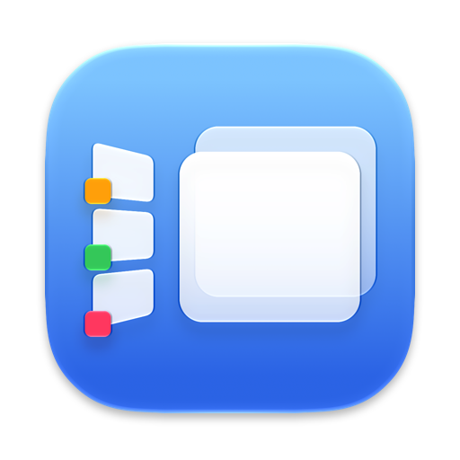

brew install eugene-tea/tap/stage-managerOut of the box it looks and behaves like Apple’s own Stage Manager. Every addition stays out of sight until you reach for it.
Stages on the left, floating, overlapping windows in the middle. Every Desktop keeps its own stages, as on your Mac today.
Send an app to its own stage, a named stage or the current one; pin a window to every stage; open windows centred or cascaded.
Drag a stage onto another to merge them, reorder the strip, and find your stages again after a restart.
Settings for the essentials; everything else in a plain config file, easiest changed by asking an AI agent. Hotkeys if you want them, never required.
The first time you open it, a small welcome window walks you through these, one row each.
This one takes over from it. Stage Manager offers to turn Apple’s off for you, and moves nothing until it is off.
Lets Stage Manager move, hide and bring back your windows. Without it, nothing can be arranged; it waits until access is allowed.
Live pictures of your windows on the cards and in switches. Without it, cards show plain window shapes with the app’s icon.
Nothing about your windows leaves your Mac. Stage Manager checks for updates once a day, from GitHub; nothing about you or this Mac is sent, and Settings can turn the check off.